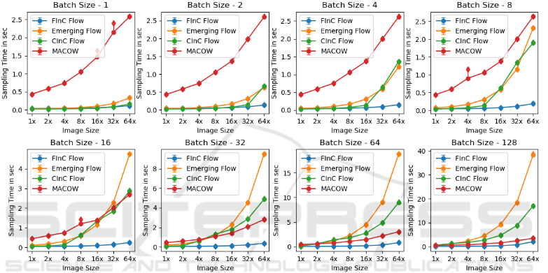

BPD for the FInC Flow model.
Finding the inverse of FInC Flow layers.
Finding the inverse of CInC Flow layers.

Comparison of the speed fro batch size, input size.
Aditya's Thesis
BibTeX
@conference{visapp23,
author={Aditya Kallappa. and Sandeep Nagar. and Girish Varma.},
title={FInC Flow: Fast and Invertible k × k Convolutions for Normalizing Flows},
booktitle={Proceedings of the 18th International Joint Conference on Computer Vision, Imaging and Computer Graphics Theory and Applications (VISIGRAPP 2023) - Volume 5: VISAPP},
year={2023},
pages={338-348},
publisher={SciTePress},
organization={INSTICC},
doi={10.5220/0011876600003417},
isbn={978-989-758-634-7},
issn={2184-4321},
}